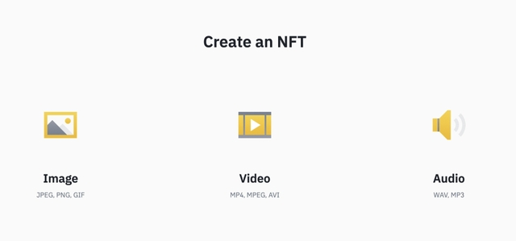

Если вы зашли на эту вкладку, вы явно заинтересованы в создании своего токена или же хотите оставить свой след в маленькой «истории NFT». Здесь вы сможете найти всю информацию, которая вам поможет создать свой токен.
Перед созданием NFT
Прежде чем вы сможете начать создавать собственные NFT, вам потребуются три вещи:
- ваша песня, произведение искусства или предмет коллекционирования;
- некоторое количество криптовалюты для оплаты комиссии за создание;
- криптовалютный кошелек для хранения криптовалюты.
- Вам также нужно будет выбрать блокчейн, в котором вы создадите свой невзаимозаменяемый токен. Ниже мы еще остановимся на этом.
Из чего можно сделать NFT?
Очень важно разобраться в том, что именно может стать NFT. Могут ли это быть исключительно цифровые предметы искусства или в том числе и реальные произведения? Хоть это пока и редкость, но физические предметы коллекционирования также могут быть представлены в виде NFT. В этих случаях закрытый ключ к кошельку, содержащему NFT, обычно встроен в физический предмет или предоставляется вместе с ним.
Нужен ли мне конкретный кошелек для использования NFT?
Все зависит от сети, в которой вы хотите создать свой токен. К счастью, сегодня большинство кошельков поддерживают сети Ethereum и Binance Smart Chain, и между кошельками нет особой разницы. Оба блокчейна являются наиболее популярными для создания NFT. Здесь важнее всего проверить сеть блокчейна, на базе которой создан ваш токен. Если это токен Ethereum, вам понадобится кошелек, поддерживающий Ethereum. Если Tezos, то вам понадобится кошелек, поддерживающий Tezos. Для удобства рекомендуем использовать MetaMask или Trust Wallet. Эти два криптокошелька поддерживают множество блокчейнов. Однако вы всегда должны проверять, поддерживает ли ваш кошелек тот конкретный блокчейн, в котором находится ваш токен.
Какую платформу можно использовать для создания NFT?
Выбор платформы для создания NFT зависит от выбора блокчейна, который вы хотите использовать. Большинство протоколов BSC создают ваш NFT в виде токена BEP-721, поэтому технически они будут одинаковыми, какой бы блокчейн вы ни выбрали.
Если после этого вы захотите быстро обменять свой токен, вероятно, лучше выбрать платформу со знакомым вам маркетплейсом. В этом случае вам не нужно будет после создания NFT переносить его в другое место.
Для удобства мы рекомендуем BakerySwap, Juggerworld и Treasureland. У всех этих проектов BSC простой интерфейс и низкая комиссия за создание NFT. У BakerySwap крупнейший NFT-маркетплейс, что делает его отличным выбором для всех, кто хотел бы продать свои NFT после создания. В Treasureland есть возможность бесплатного создания NFT. Если вы хотите использовать сеть Ethereum, то рассмотрите два самых популярных варианта: Opensea или Rarible.
Разобравшись с основными вопросами можно приступать к созданию
Как пример возьмем способ создания NFT на платформе Featured By Binance
Создание
- Перейдите на главную страницу Featured By Binance и нажмите [create].
- Для создания потребуется подключить криптокошелек.
- Далее загрузите свои цифровые файлы (изображения, аудио, видео и т. д.). 
- Обязательно добавьте описание (метаданные) к вашему NFT. Вам также придется выбрать между созданием отдельных NFT или коллекции (группа NFT).
Советуем перейти во вкладку полезные ссылки, там вы сможете найти больше ссылки на другие способы создания NFT. Здесь был приведен один из самых распростаненных
© 2021. Все права защищены.